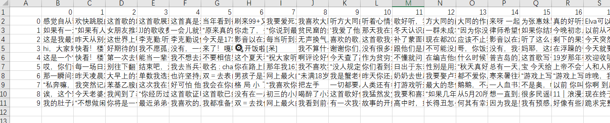
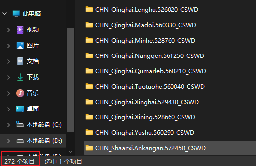
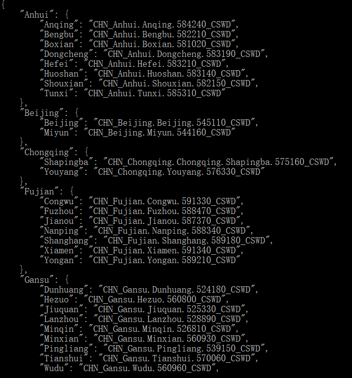

<!DOCTYPE html>
<html lang="en">

<head>
  <meta charset="utf-8" />
   
  <meta name="keywords" content="代替你陪着我的是年轮" />
   
  <meta name="description" content="这世界有那么多人，活在我飞扬的青春" />
  
  <meta name="viewport" content="width=device-width, initial-scale=1, maximum-scale=1" />
  <title>
     果果的博客
  </title>
  <meta name="generator" content="hexo-theme-yilia-plus">
  
  <link rel="shortcut icon" href="/favicon.ico" />
  
  
<link rel="stylesheet" href="/css/style.css">

  
<script src="/js/pace.min.js"></script>


  

  

</head>

</html>

<body>
  <div id="app">
    <main class="content">
      
<section class="cover">
    
      
      <a class="forkMe" href="https://github.com/gwyxjtu"
        target="_blank"></a>
    
  <div class="cover-frame">
    <div class="bg-box">
      
    </div>
    <div class="cover-inner text-center text-white">
      <h1><a href="/">果果的博客</a></h1>
      <div id="subtitle-box">
        
        <span id="subtitle"></span>
        
      </div>
      <div>
        
      </div>
    </div>
  </div>
  <div class="cover-learn-more">
    <a href="javascript:void(0)" class="anchor"><i class="ri-arrow-down-line"></i></a>
  </div>
</section>

<div id="main">
  <section class="outer">
  <article class="articles">
    
    
    
    
    <article id="post-网易云热榜热评爬虫" class="article article-type-post" itemscope
  itemprop="blogPost" data-scroll-reveal>

  <div class="article-inner">
    
    <header class="article-header">
       
<h2 itemprop="name">
  <a class="article-title" href="/2021/08/07/%E7%BD%91%E6%98%93%E4%BA%91%E7%83%AD%E6%A6%9C%E7%83%AD%E8%AF%84%E7%88%AC%E8%99%AB/"
    >网易云热榜热评爬虫</a
  >
</h2>
  

    </header>
    

    
    <div class="article-meta">
      <a href="/2021/08/07/%E7%BD%91%E6%98%93%E4%BA%91%E7%83%AD%E6%A6%9C%E7%83%AD%E8%AF%84%E7%88%AC%E8%99%AB/" class="article-date">
  <time datetime="2021-08-07T04:40:21.000Z" itemprop="datePublished">2021-08-07</time>
</a>
      
      
      
      
    </div>
    

    

    <div class="article-entry" itemprop="articleBody">
      


      

      
      <h2 id="网易云爬虫"><a href="#网易云爬虫" class="headerlink" title="网易云爬虫"></a>网易云爬虫</h2><p>今日发现qq空间里面的长按评论自动生成网易云评论的功能么得了，很可惜，觉得有必要写一个网易云音乐评论的爬虫。</p>
<p>之前的爬虫大部分失效，只能自力更生，改进了部分之前失效的api可以沿用的就继续使用。</p>
<figure class="highlight python"><table><tr><td class="gutter"><pre><span class="line">1</span><br><span class="line">2</span><br><span class="line">3</span><br><span class="line">4</span><br><span class="line">5</span><br><span class="line">6</span><br><span class="line">7</span><br><span class="line">8</span><br><span class="line">9</span><br><span class="line">10</span><br><span class="line">11</span><br><span class="line">12</span><br><span class="line">13</span><br><span class="line">14</span><br><span class="line">15</span><br><span class="line">16</span><br><span class="line">17</span><br><span class="line">18</span><br><span class="line">19</span><br><span class="line">20</span><br><span class="line">21</span><br><span class="line">22</span><br><span class="line">23</span><br><span class="line">24</span><br><span class="line">25</span><br><span class="line">26</span><br><span class="line">27</span><br><span class="line">28</span><br><span class="line">29</span><br><span class="line">30</span><br><span class="line">31</span><br><span class="line">32</span><br><span class="line">33</span><br><span class="line">34</span><br><span class="line">35</span><br><span class="line">36</span><br><span class="line">37</span><br><span class="line">38</span><br><span class="line">39</span><br><span class="line">40</span><br><span class="line">41</span><br><span class="line">42</span><br><span class="line">43</span><br><span class="line">44</span><br><span class="line">45</span><br><span class="line">46</span><br><span class="line">47</span><br><span class="line">48</span><br><span class="line">49</span><br><span class="line">50</span><br><span class="line">51</span><br><span class="line">52</span><br><span class="line">53</span><br><span class="line">54</span><br><span class="line">55</span><br><span class="line">56</span><br><span class="line">57</span><br><span class="line">58</span><br><span class="line">59</span><br><span class="line">60</span><br><span class="line">61</span><br><span class="line">62</span><br><span class="line">63</span><br><span class="line">64</span><br><span class="line">65</span><br><span class="line">66</span><br><span class="line">67</span><br></pre></td><td class="code"><pre><span class="line"><span class="keyword">import</span> requests</span><br><span class="line"><span class="keyword">from</span> pyquery <span class="keyword">import</span> PyQuery <span class="keyword">as</span> pq</span><br><span class="line"><span class="keyword">import</span> pandas <span class="keyword">as</span> pd</span><br><span class="line"><span class="keyword">import</span> random</span><br><span class="line"><span class="keyword">import</span> time</span><br><span class="line"><span class="keyword">from</span> lxml <span class="keyword">import</span> etree</span><br><span class="line"><span class="keyword">import</span> json</span><br><span class="line"><span class="keyword">from</span> pandas.core.frame <span class="keyword">import</span> DataFrame</span><br><span class="line"></span><br><span class="line">headers = &#123;<span class="string">'User-Agent'</span>: <span class="string">'Mozilla/5.0 (Windows NT 10.0; Win64; x64) AppleWebKit/537.36 (KHTML, like Gecko) Chrome/81.0.4044.129 Safari/537.36'</span>&#125;</span><br><span class="line"></span><br><span class="line"><span class="function"><span class="keyword">def</span> <span class="title">scrape_index</span><span class="params">(url)</span>:</span></span><br><span class="line">    url = <span class="string">'https://music.163.com/discover/playlist/?order=hot&amp;cat=%E5%8D%8E%E8%AF%AD&amp;limit=35&amp;offset=1'</span></span><br><span class="line">    print(url)</span><br><span class="line">    response = requests.get(url,headers = headers)</span><br><span class="line">    html = etree.HTML(response.content)</span><br><span class="line">    name_list = html.xpath(<span class="string">'/html/body/div[3]/div/ul/li/div/a/@href'</span>)</span><br><span class="line">    <span class="comment">#print(response.text)</span></span><br><span class="line">    <span class="keyword">return</span> name_list</span><br><span class="line"><span class="function"><span class="keyword">def</span> <span class="title">get_music</span><span class="params">()</span>:</span></span><br><span class="line">    list_01 = []</span><br><span class="line">    url = <span class="string">'https://music.163.com/discover/playlist/?order=hot&amp;cat=%E5%8D%8E%E8%AF%AD&amp;limit=35&amp;offset=&#123;page&#125;'</span></span><br><span class="line">    <span class="keyword">for</span> page <span class="keyword">in</span> range(<span class="number">1</span>,<span class="number">2</span>):    <span class="comment"># 跑一页试试，如果跑全部，改为 range(0,1295,35)</span></span><br><span class="line">        url1 = url.format(page = page)</span><br><span class="line">        list = []</span><br><span class="line">        <span class="comment">#print(url1)</span></span><br><span class="line">        <span class="keyword">for</span> i <span class="keyword">in</span> scrape_index(url1):  <span class="comment">#  generator 遍历之后的i的类型仍然是qyquery类型</span></span><br><span class="line">            <span class="comment">#i_url = i.attr('href')     #  attr 方法来获取属性</span></span><br><span class="line">            <span class="string">'''</span></span><br><span class="line"><span class="string">            获取歌单和评论均用了网易云音乐get请求的API，快速高效！</span></span><br><span class="line"><span class="string">            网易云歌单API</span></span><br><span class="line"><span class="string">            https://music.163.com/api/playlist/detail?id=&#123;歌单ID&#125;</span></span><br><span class="line"><span class="string">            热评获取API</span></span><br><span class="line"><span class="string">            http://music.163.com/api/v1/resource/comments/R_SO_4_&#123;歌曲ID&#125;?limit=20&amp;offset=0</span></span><br><span class="line"><span class="string">            '''</span><span class="comment">#https://music.163.com/playlist?id=564322156</span></span><br><span class="line">            detail_url = <span class="string">'https://music.163.com'</span>+i    <span class="comment">#获取的url还需要替换一下符合API要求的格式</span></span><br><span class="line">            </span><br><span class="line">            list.append(detail_url) </span><br><span class="line">        list_01.extend(list)    <span class="comment"># extend 对列表合并          </span></span><br><span class="line">        <span class="comment">#time.sleep(5+random.random())  # 文明爬虫</span></span><br><span class="line">    <span class="comment">#print(list_01)</span></span><br><span class="line">    <span class="keyword">return</span> list_01</span><br><span class="line"><span class="function"><span class="keyword">def</span> <span class="title">get_comment</span><span class="params">(music_list)</span>:</span></span><br><span class="line">    re = []</span><br><span class="line">    <span class="keyword">for</span> l <span class="keyword">in</span> music_list[:<span class="number">10</span>]:</span><br><span class="line">        print(l)</span><br><span class="line">        <span class="comment">#l = 'https://music.163.com/playlist?id=2900343697'</span></span><br><span class="line">        response = requests.get(l,headers = headers)<span class="comment">#/html/body/div[3]/div[1]/div/div/div[2]/div[2]/ul/li[1]/a</span></span><br><span class="line">        html = etree.HTML(response.content)<span class="comment">#/html/body/div[3]/div[1]/div/div/div[2]/div[2]/div/div[1]/table/tbody/tr[3]/td[2]/div/div/div/span/a</span></span><br><span class="line">        name_list = html.xpath(<span class="string">'/html/body/div[3]/div[1]/div/div/div[2]/div[2]/ul/li/a/@href'</span>)</span><br><span class="line">        ans = []</span><br><span class="line">        <span class="keyword">for</span> s <span class="keyword">in</span> name_list:</span><br><span class="line">            url = <span class="string">'https://music.163.com/api/v1/resource/comments/R_SO_4_'</span>+s.split(<span class="string">"id="</span>)[<span class="number">-1</span>]</span><br><span class="line">            res = json.loads(requests.get(url,headers = headers).text)</span><br><span class="line">            <span class="keyword">for</span> j <span class="keyword">in</span> res[<span class="string">'hotComments'</span>]:</span><br><span class="line">                ans.append(j[<span class="string">'content'</span>].replace(<span class="string">'\n'</span>, <span class="string">' '</span>).replace(<span class="string">'\r'</span>, <span class="string">' '</span>))</span><br><span class="line">        re.append(ans)</span><br><span class="line">    <span class="keyword">return</span> re</span><br><span class="line"></span><br><span class="line"><span class="keyword">if</span> __name__ == <span class="string">'__main__'</span>:</span><br><span class="line">    ans = get_comment(get_music())</span><br><span class="line">    <span class="comment">#print(ans)</span></span><br><span class="line">    a = DataFrame(ans)</span><br><span class="line">    a.to_csv(<span class="string">'test.csv'</span>,encoding=<span class="string">"utf_8_sig"</span>)</span><br><span class="line">    <span class="keyword">for</span> i <span class="keyword">in</span> range(len(ans)):</span><br><span class="line">        <span class="keyword">for</span> j <span class="keyword">in</span> range(len(ans[i])):</span><br><span class="line">            print(ans[i][j])</span><br></pre></td></tr></table></figure>
<p>会存到本地的test.csv地下，没有加延迟，建议挂代理爬取。<br></p>

      
      <!-- 打赏 -->
      
    </div>
    <footer class="article-footer">
      <a data-url="http://gwyxjtu.github.io/2021/08/07/%E7%BD%91%E6%98%93%E4%BA%91%E7%83%AD%E6%A6%9C%E7%83%AD%E8%AF%84%E7%88%AC%E8%99%AB/" data-id="cks1alcs30000oov2axstbt5s"
        class="article-share-link">分享</a>
        
      
  <ul class="article-tag-list" itemprop="keywords"><li class="article-tag-list-item"><a class="article-tag-list-link" href="/tags/python-spyder/" rel="tag">python,spyder</a></li></ul>

    </footer>

  </div>

  

  
  
  

  

</article>
    
    <article id="post-request爬取energyplus天气数据并整理二维字典" class="article article-type-post" itemscope
  itemprop="blogPost" data-scroll-reveal>

  <div class="article-inner">
    
    <header class="article-header">
       
<h2 itemprop="name">
  <a class="article-title" href="/2021/08/02/request%E7%88%AC%E5%8F%96energyplus%E5%A4%A9%E6%B0%94%E6%95%B0%E6%8D%AE%E5%B9%B6%E6%95%B4%E7%90%86%E4%BA%8C%E7%BB%B4%E5%AD%97%E5%85%B8/"
    >request爬取energyplus天气数据并整理二维字典</a
  >
</h2>
  

    </header>
    

    
    <div class="article-meta">
      <a href="/2021/08/02/request%E7%88%AC%E5%8F%96energyplus%E5%A4%A9%E6%B0%94%E6%95%B0%E6%8D%AE%E5%B9%B6%E6%95%B4%E7%90%86%E4%BA%8C%E7%BB%B4%E5%AD%97%E5%85%B8/" class="article-date">
  <time datetime="2021-08-02T13:22:10.000Z" itemprop="datePublished">2021-08-02</time>
</a>
      
      
      
      
    </div>
    

    

    <div class="article-entry" itemprop="articleBody">
      


      

      
      <h2 id="爬虫模块"><a href="#爬虫模块" class="headerlink" title="爬虫模块"></a>爬虫模块</h2><p>思路以lxml模块为主进行网页解析。用zipfile和tempfile对下载到的zip文件进行解压。<br>运行代码会在当前文件夹下创建data，并在里面下载所有的天气数据。</p>
<p><strong>值得注意的是，网站存在访问限制，由于有代理服务器，所以没有加sleep，也没有测试网站反爬虫的上限，如果没有代理谨慎使用，或者保守添加停等策略。</strong></p>
<figure class="highlight python"><table><tr><td class="gutter"><pre><span class="line">1</span><br><span class="line">2</span><br><span class="line">3</span><br><span class="line">4</span><br><span class="line">5</span><br><span class="line">6</span><br><span class="line">7</span><br><span class="line">8</span><br><span class="line">9</span><br><span class="line">10</span><br><span class="line">11</span><br><span class="line">12</span><br><span class="line">13</span><br><span class="line">14</span><br><span class="line">15</span><br><span class="line">16</span><br><span class="line">17</span><br><span class="line">18</span><br><span class="line">19</span><br><span class="line">20</span><br><span class="line">21</span><br><span class="line">22</span><br><span class="line">23</span><br><span class="line">24</span><br><span class="line">25</span><br><span class="line">26</span><br><span class="line">27</span><br><span class="line">28</span><br><span class="line">29</span><br><span class="line">30</span><br><span class="line">31</span><br><span class="line">32</span><br><span class="line">33</span><br><span class="line">34</span><br><span class="line">35</span><br><span class="line">36</span><br><span class="line">37</span><br><span class="line">38</span><br><span class="line">39</span><br><span class="line">40</span><br><span class="line">41</span><br><span class="line">42</span><br><span class="line">43</span><br><span class="line">44</span><br></pre></td><td class="code"><pre><span class="line"><span class="keyword">import</span> requests</span><br><span class="line"><span class="keyword">import</span> zipfile</span><br><span class="line"><span class="keyword">import</span> tempfile</span><br><span class="line"><span class="keyword">from</span> lxml <span class="keyword">import</span> etree</span><br><span class="line"> </span><br><span class="line"><span class="function"><span class="keyword">def</span> <span class="title">get_data</span><span class="params">(url)</span>:</span></span><br><span class="line">    <span class="comment">#url = "https://energyplus.net/weather-download/asia_wmo_region_2/CHN//CHN_Anhui.Huoshan.583140_CSWD/all"</span></span><br><span class="line">    response = requests.get(url)</span><br><span class="line">    <span class="keyword">return</span> url, response.content</span><br><span class="line"><span class="function"><span class="keyword">def</span> <span class="title">unzip</span><span class="params">(filename,data)</span>:</span></span><br><span class="line">    _tmp_file = tempfile.TemporaryFile()  <span class="comment"># 创建临时文件</span></span><br><span class="line">    <span class="comment">#print(_tmp_file)</span></span><br><span class="line"> </span><br><span class="line">    _tmp_file.write(data)  <span class="comment"># byte字节数据写入临时文件</span></span><br><span class="line">    <span class="comment"># _tmp_file.seek(0)</span></span><br><span class="line"> </span><br><span class="line">    zf = zipfile.ZipFile(_tmp_file, mode=<span class="string">'r'</span>)</span><br><span class="line">    <span class="keyword">for</span> names <span class="keyword">in</span> zf.namelist():</span><br><span class="line">        f = zf.extract(names, <span class="string">'./data/'</span>+filename)  <span class="comment"># 解压到data目录文件下</span></span><br><span class="line">        print(f)</span><br><span class="line">    zf.close()</span><br><span class="line"></span><br><span class="line"><span class="keyword">if</span> __name__ == <span class="string">'__main__'</span>:</span><br><span class="line">    url_main = <span class="string">'https://energyplus.net/weather-region/asia_wmo_region_2/CHN'</span></span><br><span class="line">    response = requests.get(url_main)</span><br><span class="line">    <span class="comment">#print(response.content)</span></span><br><span class="line">    html = etree.HTML(response.content)</span><br><span class="line">    name_city = html.xpath(<span class="string">'/html/body/div[2]/div/section/div/section/div/a/@href '</span>)</span><br><span class="line">    print(len(name_city))</span><br><span class="line"></span><br><span class="line">    <span class="keyword">for</span> i <span class="keyword">in</span> range(len(name_city)):</span><br><span class="line">        <span class="comment">#print(name_i)</span></span><br><span class="line">        s = name_city[i+<span class="number">315</span>].split(<span class="string">'/'</span>)</span><br><span class="line">        <span class="comment"># print("https://energyplus.net/weather-download/asia_wmo_region_2/CHN//"+s[-1]+"/all")</span></span><br><span class="line">        url = <span class="string">"https://energyplus.net/weather-download/asia_wmo_region_2/CHN//"</span>+s[<span class="number">-1</span>]+<span class="string">"/all"</span></span><br><span class="line">        <span class="keyword">if</span> <span class="string">"CSWD"</span> <span class="keyword">not</span> <span class="keyword">in</span> url:</span><br><span class="line">            <span class="keyword">continue</span></span><br><span class="line">        print(i+<span class="number">315</span>)</span><br><span class="line">        print(url)</span><br><span class="line">        url, data = get_data(url)</span><br><span class="line">        unzip(s[<span class="number">-1</span>],data)</span><br><span class="line">        <span class="comment">#exit(0)</span></span><br><span class="line">    <span class="comment"># url = "https://energyplus.net/weather-download/asia_wmo_region_2/CHN//CHN_Anhui.Huoshan.583140_CSWD/all"</span></span><br><span class="line">    <span class="comment"># url, data = get_data(url)  # data为byte字节</span></span><br></pre></td></tr></table></figure>
<p>更换三轮IP，爬完全部数据。如需其余国家的数据，修改url一行的路由即可。结果如图<br></p>
<h2 id="数据整理模块"><a href="#数据整理模块" class="headerlink" title="数据整理模块"></a>数据整理模块</h2><p>此处必须使用二维索引字典，因为第一索引是省份，第二索引是city名。二维索引字典增添键值对需要进行判断。具体详见代码。。。</p>
<figure class="highlight python"><table><tr><td class="gutter"><pre><span class="line">1</span><br><span class="line">2</span><br><span class="line">3</span><br><span class="line">4</span><br><span class="line">5</span><br><span class="line">6</span><br><span class="line">7</span><br><span class="line">8</span><br><span class="line">9</span><br><span class="line">10</span><br><span class="line">11</span><br><span class="line">12</span><br><span class="line">13</span><br><span class="line">14</span><br><span class="line">15</span><br><span class="line">16</span><br><span class="line">17</span><br><span class="line">18</span><br><span class="line">19</span><br><span class="line">20</span><br><span class="line">21</span><br><span class="line">22</span><br><span class="line">23</span><br><span class="line">24</span><br></pre></td><td class="code"><pre><span class="line"><span class="keyword">import</span> os</span><br><span class="line"></span><br><span class="line">filePath = <span class="string">"./"</span></span><br><span class="line"><span class="keyword">for</span> _,d,_ <span class="keyword">in</span> os.walk(filePath):</span><br><span class="line">	<span class="keyword">break</span> </span><br><span class="line">	<span class="comment"># 很奇怪为什么是一个迭代对象？难道是迭代打开子目录？</span></span><br><span class="line"><span class="function"><span class="keyword">def</span> <span class="title">addtwodimdict</span><span class="params">(thedict, key_a, key_b, val)</span>:</span> </span><br><span class="line">    <span class="keyword">if</span> key_a <span class="keyword">in</span> thedict:</span><br><span class="line">        thedict[key_a].update(&#123;key_b: val&#125;)</span><br><span class="line">    <span class="keyword">else</span>:</span><br><span class="line">        thedict.update(&#123;key_a:&#123;key_b: val&#125;&#125;)</span><br><span class="line"></span><br><span class="line">main_dic = dict(dict())</span><br><span class="line"><span class="keyword">for</span> name <span class="keyword">in</span> d:</span><br><span class="line">	<span class="comment">#print(name.split("."))</span></span><br><span class="line">	province,city = name.split(<span class="string">"."</span>)[<span class="number">0</span>][<span class="number">4</span>:],name.split(<span class="string">"."</span>)[<span class="number">-2</span>]</span><br><span class="line">	<span class="comment">#print(province,city)</span></span><br><span class="line">	<span class="comment"># if province in main_dic.keys():</span></span><br><span class="line">	<span class="comment">#main_dic[province][city] = name</span></span><br><span class="line">	addtwodimdict(main_dic,province,city,name)</span><br><span class="line"></span><br><span class="line"><span class="comment">#print(main_dic)</span></span><br><span class="line"><span class="comment"># import json</span></span><br><span class="line"><span class="comment"># print(json.dumps(main_dic,indent = 4))</span></span><br></pre></td></tr></table></figure>
<p>结果如图<br></p>

      
      <!-- 打赏 -->
      
    </div>
    <footer class="article-footer">
      <a data-url="http://gwyxjtu.github.io/2021/08/02/request%E7%88%AC%E5%8F%96energyplus%E5%A4%A9%E6%B0%94%E6%95%B0%E6%8D%AE%E5%B9%B6%E6%95%B4%E7%90%86%E4%BA%8C%E7%BB%B4%E5%AD%97%E5%85%B8/" data-id="ckrup0a6v000zx4v2f4ve0x9p"
        class="article-share-link">分享</a>
        
      
  <ul class="article-tag-list" itemprop="keywords"><li class="article-tag-list-item"><a class="article-tag-list-link" href="/tags/python/" rel="tag">python</a></li></ul>

    </footer>

  </div>

  

  
  
  

  

</article>
    
    <article id="post-IEEE模板中使用tex编辑NOMENCLA-TURE" class="article article-type-post" itemscope
  itemprop="blogPost" data-scroll-reveal>

  <div class="article-inner">
    
    <header class="article-header">
       
<h2 itemprop="name">
  <a class="article-title" href="/2021/07/17/IEEE%E6%A8%A1%E6%9D%BF%E4%B8%AD%E4%BD%BF%E7%94%A8tex%E7%BC%96%E8%BE%91NOMENCLA-TURE/"
    >IEEE模板中使用tex编辑NOMENCLATURE</a
  >
</h2>
  

    </header>
    

    
    <div class="article-meta">
      <a href="/2021/07/17/IEEE%E6%A8%A1%E6%9D%BF%E4%B8%AD%E4%BD%BF%E7%94%A8tex%E7%BC%96%E8%BE%91NOMENCLA-TURE/" class="article-date">
  <time datetime="2021-07-17T02:51:47.000Z" itemprop="datePublished">2021-07-17</time>
</a>
      
      
      
      
    </div>
    

    

    <div class="article-entry" itemprop="articleBody">
      


      

      
      <p>参考模板 <a href="https://www.overleaf.com/learn/latex/Nomenclatures" target="_blank" rel="noopener">https://www.overleaf.com/learn/latex/Nomenclatures</a></p>
<p>公示表在会议模板中并没有直接给出，在正文中加入相应代码后使用命令行产生nls文件即可。</p>
<figure class="highlight cmd"><table><tr><td class="gutter"><pre><span class="line">1</span><br></pre></td><td class="code"><pre><span class="line">makeindex conference_101719.nlo -s nomencl.ist  -o conference_101719.nls</span><br></pre></td></tr></table></figure>

<p>再次编译tex即可展示</p>

      
      <!-- 打赏 -->
      
    </div>
    <footer class="article-footer">
      <a data-url="http://gwyxjtu.github.io/2021/07/17/IEEE%E6%A8%A1%E6%9D%BF%E4%B8%AD%E4%BD%BF%E7%94%A8tex%E7%BC%96%E8%BE%91NOMENCLA-TURE/" data-id="ckrup0a660002x4v20u6fbvzb"
        class="article-share-link">分享</a>
        
      
    </footer>

  </div>

  

  
  
  

  

</article>
    
    <article id="post-qq-add-answer" class="article article-type-post" itemscope
  itemprop="blogPost" data-scroll-reveal>

  <div class="article-inner">
    
    <header class="article-header">
       
<h2 itemprop="name">
  <a class="article-title" href="/2021/06/08/qq-add-answer/"
    >qq_add_answer</a
  >
</h2>
  

    </header>
    

    
    <div class="article-meta">
      <a href="/2021/06/08/qq-add-answer/" class="article-date">
  <time datetime="2021-06-08T01:43:02.000Z" itemprop="datePublished">2021-06-08</time>
</a>
      
      
      
      
    </div>
    

    

    <div class="article-entry" itemprop="articleBody">
      


      

      
      <p>设置的qq加好友问题，count Prime number less than 867718012 。<br>答案如下</p>
<figure class="highlight c++"><table><tr><td class="gutter"><pre><span class="line">1</span><br><span class="line">2</span><br><span class="line">3</span><br><span class="line">4</span><br><span class="line">5</span><br><span class="line">6</span><br><span class="line">7</span><br><span class="line">8</span><br><span class="line">9</span><br><span class="line">10</span><br><span class="line">11</span><br><span class="line">12</span><br><span class="line">13</span><br><span class="line">14</span><br><span class="line">15</span><br><span class="line">16</span><br><span class="line">17</span><br><span class="line">18</span><br><span class="line">19</span><br><span class="line">20</span><br><span class="line">21</span><br><span class="line">22</span><br><span class="line">23</span><br><span class="line">24</span><br><span class="line">25</span><br><span class="line">26</span><br><span class="line">27</span><br><span class="line">28</span><br><span class="line">29</span><br><span class="line">30</span><br><span class="line">31</span><br><span class="line">32</span><br><span class="line">33</span><br><span class="line">34</span><br><span class="line">35</span><br><span class="line">36</span><br><span class="line">37</span><br><span class="line">38</span><br><span class="line">39</span><br><span class="line">40</span><br><span class="line">41</span><br><span class="line">42</span><br><span class="line">43</span><br><span class="line">44</span><br><span class="line">45</span><br><span class="line">46</span><br><span class="line">47</span><br><span class="line">48</span><br><span class="line">49</span><br><span class="line">50</span><br><span class="line">51</span><br><span class="line">52</span><br><span class="line">53</span><br><span class="line">54</span><br><span class="line">55</span><br><span class="line">56</span><br><span class="line">57</span><br><span class="line">58</span><br><span class="line">59</span><br><span class="line">60</span><br><span class="line">61</span><br><span class="line">62</span><br><span class="line">63</span><br><span class="line">64</span><br><span class="line">65</span><br><span class="line">66</span><br><span class="line">67</span><br><span class="line">68</span><br><span class="line">69</span><br><span class="line">70</span><br><span class="line">71</span><br><span class="line">72</span><br><span class="line">73</span><br><span class="line">74</span><br><span class="line">75</span><br><span class="line">76</span><br><span class="line">77</span><br><span class="line">78</span><br><span class="line">79</span><br><span class="line">80</span><br><span class="line">81</span><br><span class="line">82</span><br><span class="line">83</span><br><span class="line">84</span><br><span class="line">85</span><br><span class="line">86</span><br><span class="line">87</span><br><span class="line">88</span><br><span class="line">89</span><br><span class="line">90</span><br><span class="line">91</span><br><span class="line">92</span><br><span class="line">93</span><br><span class="line">94</span><br><span class="line">95</span><br></pre></td><td class="code"><pre><span class="line"><span class="meta">#<span class="meta-keyword">include</span><span class="meta-string">&lt;bits/stdc++.h&gt;</span></span></span><br><span class="line"> </span><br><span class="line"><span class="keyword">using</span> <span class="keyword">namespace</span> <span class="built_in">std</span>;</span><br><span class="line"> </span><br><span class="line"><span class="keyword">typedef</span> <span class="keyword">long</span> <span class="keyword">long</span> LL;</span><br><span class="line"><span class="keyword">const</span> <span class="keyword">int</span> N = <span class="number">5e6</span> + <span class="number">2</span>;</span><br><span class="line"><span class="keyword">bool</span> np[N];</span><br><span class="line"><span class="keyword">int</span> prime[N], pi[N];</span><br><span class="line"> </span><br><span class="line"><span class="function"><span class="keyword">int</span> <span class="title">getprime</span><span class="params">()</span> </span>&#123;</span><br><span class="line">    <span class="keyword">int</span> cnt = <span class="number">0</span>;</span><br><span class="line">    np[<span class="number">0</span>] = np[<span class="number">1</span>] = <span class="literal">true</span>;</span><br><span class="line">    pi[<span class="number">0</span>] = pi[<span class="number">1</span>] = <span class="number">0</span>;</span><br><span class="line">    <span class="keyword">for</span>(<span class="keyword">int</span> i = <span class="number">2</span>; i &lt; N; ++i) &#123;</span><br><span class="line">        <span class="keyword">if</span>(!np[i]) prime[++cnt] = i;</span><br><span class="line">        pi[i] = cnt;</span><br><span class="line">        <span class="keyword">for</span>(<span class="keyword">int</span> j = <span class="number">1</span>; j &lt;= cnt &amp;&amp; i * prime[j] &lt; N; ++j) &#123;</span><br><span class="line">            np[i * prime[j]] = <span class="literal">true</span>;</span><br><span class="line">            <span class="keyword">if</span>(i % prime[j] == <span class="number">0</span>)   <span class="keyword">break</span>;</span><br><span class="line">        &#125;</span><br><span class="line">    &#125;</span><br><span class="line">    <span class="keyword">return</span> cnt;</span><br><span class="line">&#125;</span><br><span class="line"><span class="keyword">const</span> <span class="keyword">int</span> M = <span class="number">7</span>;</span><br><span class="line"><span class="keyword">const</span> <span class="keyword">int</span> PM = <span class="number">2</span> * <span class="number">3</span> * <span class="number">5</span> * <span class="number">7</span> * <span class="number">11</span> * <span class="number">13</span> * <span class="number">17</span>;</span><br><span class="line"><span class="keyword">int</span> phi[PM + <span class="number">1</span>][M + <span class="number">1</span>], sz[M + <span class="number">1</span>];</span><br><span class="line"><span class="function"><span class="keyword">void</span> <span class="title">init</span><span class="params">()</span> </span>&#123;</span><br><span class="line">    getprime();</span><br><span class="line">    sz[<span class="number">0</span>] = <span class="number">1</span>;</span><br><span class="line">    <span class="keyword">for</span>(<span class="keyword">int</span> i = <span class="number">0</span>; i &lt;= PM; ++i)  phi[i][<span class="number">0</span>] = i;</span><br><span class="line">    <span class="keyword">for</span>(<span class="keyword">int</span> i = <span class="number">1</span>; i &lt;= M; ++i) &#123;</span><br><span class="line">        sz[i] = prime[i] * sz[i - <span class="number">1</span>];</span><br><span class="line">        <span class="keyword">for</span>(<span class="keyword">int</span> j = <span class="number">1</span>; j &lt;= PM; ++j) &#123;</span><br><span class="line">            phi[j][i] = phi[j][i - <span class="number">1</span>] - phi[j / prime[i]][i - <span class="number">1</span>];</span><br><span class="line">        &#125;</span><br><span class="line">    &#125;</span><br><span class="line">&#125;</span><br><span class="line"><span class="function"><span class="keyword">int</span> <span class="title">sqrt2</span><span class="params">(LL x)</span> </span>&#123;</span><br><span class="line">    LL r = (LL)<span class="built_in">sqrt</span>(x - <span class="number">0.1</span>);</span><br><span class="line">    <span class="keyword">while</span>(r * r &lt;= x)   ++r;</span><br><span class="line">    <span class="keyword">return</span> <span class="keyword">int</span>(r - <span class="number">1</span>);</span><br><span class="line">&#125;</span><br><span class="line"><span class="function"><span class="keyword">int</span> <span class="title">sqrt3</span><span class="params">(LL x)</span> </span>&#123;</span><br><span class="line">    LL r = (LL)cbrt(x - <span class="number">0.1</span>);</span><br><span class="line">    <span class="keyword">while</span>(r * r * r &lt;= x)   ++r;</span><br><span class="line">    <span class="keyword">return</span> <span class="keyword">int</span>(r - <span class="number">1</span>);</span><br><span class="line">&#125;</span><br><span class="line"><span class="function">LL <span class="title">getphi</span><span class="params">(LL x, <span class="keyword">int</span> s)</span> </span>&#123;</span><br><span class="line">    <span class="keyword">if</span>(s == <span class="number">0</span>)  <span class="keyword">return</span> x;</span><br><span class="line">    <span class="keyword">if</span>(s &lt;= M)  <span class="keyword">return</span> phi[x % sz[s]][s] + (x / sz[s]) * phi[sz[s]][s];</span><br><span class="line">    <span class="keyword">if</span>(x &lt;= prime[s]*prime[s])   <span class="keyword">return</span> pi[x] - s + <span class="number">1</span>;</span><br><span class="line">    <span class="keyword">if</span>(x &lt;= prime[s]*prime[s]*prime[s] &amp;&amp; x &lt; N) &#123;</span><br><span class="line">        <span class="keyword">int</span> s2x = pi[sqrt2(x)];</span><br><span class="line">        LL ans = pi[x] - (s2x + s - <span class="number">2</span>) * (s2x - s + <span class="number">1</span>) / <span class="number">2</span>;</span><br><span class="line">        <span class="keyword">for</span>(<span class="keyword">int</span> i = s + <span class="number">1</span>; i &lt;= s2x; ++i) &#123;</span><br><span class="line">            ans += pi[x / prime[i]];</span><br><span class="line">        &#125;</span><br><span class="line">        <span class="keyword">return</span> ans;</span><br><span class="line">    &#125;</span><br><span class="line">    <span class="keyword">return</span> getphi(x, s - <span class="number">1</span>) - getphi(x / prime[s], s - <span class="number">1</span>);</span><br><span class="line">&#125;</span><br><span class="line"><span class="function">LL <span class="title">getpi</span><span class="params">(LL x)</span> </span>&#123;</span><br><span class="line">    <span class="keyword">if</span>(x &lt; N)   <span class="keyword">return</span> pi[x];</span><br><span class="line">    LL ans = getphi(x, pi[sqrt3(x)]) + pi[sqrt3(x)] - <span class="number">1</span>;</span><br><span class="line">    <span class="keyword">for</span>(<span class="keyword">int</span> i = pi[sqrt3(x)] + <span class="number">1</span>, ed = pi[sqrt2(x)]; i &lt;= ed; ++i) &#123;</span><br><span class="line">        ans -= getpi(x / prime[i]) - i + <span class="number">1</span>;</span><br><span class="line">    &#125;</span><br><span class="line">    <span class="keyword">return</span> ans;</span><br><span class="line">&#125;</span><br><span class="line"><span class="function">LL <span class="title">lehmer_pi</span><span class="params">(LL x)</span> </span>&#123;</span><br><span class="line">    <span class="keyword">if</span>(x &lt; N)   <span class="keyword">return</span> pi[x];</span><br><span class="line">    <span class="keyword">int</span> a = (<span class="keyword">int</span>)lehmer_pi(sqrt2(sqrt2(x)));</span><br><span class="line">    <span class="keyword">int</span> b = (<span class="keyword">int</span>)lehmer_pi(sqrt2(x));</span><br><span class="line">    <span class="keyword">int</span> c = (<span class="keyword">int</span>)lehmer_pi(sqrt3(x));</span><br><span class="line">    LL sum = getphi(x, a) + LL(b + a - <span class="number">2</span>) * (b - a + <span class="number">1</span>) / <span class="number">2</span>;</span><br><span class="line">    <span class="keyword">for</span> (<span class="keyword">int</span> i = a + <span class="number">1</span>; i &lt;= b; i++) &#123;</span><br><span class="line">        LL w = x / prime[i];</span><br><span class="line">        sum -= lehmer_pi(w);</span><br><span class="line">        <span class="keyword">if</span> (i &gt; c) <span class="keyword">continue</span>;</span><br><span class="line">        LL lim = lehmer_pi(sqrt2(w));</span><br><span class="line">        <span class="keyword">for</span> (<span class="keyword">int</span> j = i; j &lt;= lim; j++) &#123;</span><br><span class="line">            sum -= lehmer_pi(w / prime[j]) - (j - <span class="number">1</span>);</span><br><span class="line">        &#125;</span><br><span class="line">    &#125;</span><br><span class="line">    <span class="keyword">return</span> sum;</span><br><span class="line">&#125;</span><br><span class="line"> </span><br><span class="line"><span class="function"><span class="keyword">int</span> <span class="title">main</span><span class="params">()</span> </span>&#123;</span><br><span class="line">    init();</span><br><span class="line">    LL n;</span><br><span class="line">    <span class="keyword">while</span>(<span class="built_in">cin</span> &gt;&gt; n) &#123;</span><br><span class="line">        <span class="built_in">cout</span> &lt;&lt; lehmer_pi(n) &lt;&lt; <span class="built_in">endl</span>;</span><br><span class="line">    &#125;</span><br><span class="line">    <span class="keyword">return</span> <span class="number">0</span>;</span><br><span class="line">&#125;</span><br></pre></td></tr></table></figure>

<p>代码copy自Meisell-Lehmer算法模板。<br>速度极快</p>

      
      <!-- 打赏 -->
      
    </div>
    <footer class="article-footer">
      <a data-url="http://gwyxjtu.github.io/2021/06/08/qq-add-answer/" data-id="ckrup0a6s000wx4v2bz1beede"
        class="article-share-link">分享</a>
        
      
    </footer>

  </div>

  

  
  
  

  

</article>
    
  </article>
  

  
  <nav class="page-nav">
    
    <span class="page-number current">1</span><a class="page-number" href="/page/2/">2</a><a class="page-number" href="/page/3/">3</a><span class="space">&hellip;</span><a class="page-number" href="/page/11/">11</a><a class="extend next" rel="next" href="/page/2/">下一页</a>
  </nav>
  
</section>
</div>

      <footer class="footer">
  <div class="outer">
    <ul class="list-inline">
      <li>
        &copy;
        2019-2021
        galaxy
      </li>
      <li>
        
          Powered by
        
        
        <a href="https://hexo.io" target="_blank">Hexo</a> Theme <a href="https://github.com/Shen-Yu/hexo-theme-ayer" target="_blank">Ayer</a>
        
      </li>
    </ul>
    <ul class="list-inline">
      <li>
        
        
        <ul class="list-inline">
  <li>PV:<span id="busuanzi_value_page_pv"></span></li>
  <li>UV:<span id="busuanzi_value_site_uv"></span></li>
</ul>
        
      </li>
      <li>
        <!-- cnzz统计 -->
        
        <script type="text/javascript" src='https://s9.cnzz.com/z_stat.php?id=1278069914&amp;web_id=1278069914'></script>
        
      </li>
    </ul>
  </div>
</footer>
    <div class="to_top">
        <div class="totop" id="totop">
  <i class="ri-arrow-up-line"></i>
</div>
      </div>
    </main>
      <aside class="sidebar">
        <button class="navbar-toggle"></button>
<nav class="navbar">
  
  <div class="logo">
    <a href="/"></a>
  </div>
  
  <ul class="nav nav-main">
    
    <li class="nav-item">
      <a class="nav-item-link" href="/">主页</a>
    </li>
    
    <li class="nav-item">
      <a class="nav-item-link" href="/archives">归档</a>
    </li>
    
    <li class="nav-item">
      <a class="nav-item-link" href="/categories">分类</a>
    </li>
    
    <li class="nav-item">
      <a class="nav-item-link" href="/tags">标签</a>
    </li>
    
    <li class="nav-item">
      <a class="nav-item-link" href="/2021/about">关于我</a>
    </li>
    
  </ul>
</nav>
<nav class="navbar navbar-bottom">
  <ul class="nav">
    <li class="nav-item">
      
      <a class="nav-item-link nav-item-search"  title="Search">
        <i class="ri-search-line"></i>
      </a>
      
      
      <a class="nav-item-link" target="_blank" href="/atom.xml" title="RSS Feed">
        <i class="ri-rss-line"></i>
      </a>
      
    </li>
  </ul>
</nav>
<div class="search-form-wrap">
  <div class="local-search local-search-plugin">
  <input type="search" id="local-search-input" class="local-search-input" placeholder="Search...">
  <div id="local-search-result" class="local-search-result"></div>
</div>
</div>
      </aside>
      <div id="mask"></div>

<!-- #reward -->
<div id="reward">
  <span class="close"><i class="ri-close-line"></i></span>
  <p class="reward-p"><i class="ri-cup-line"></i>请我喝杯咖啡吧~</p>
  <div class="reward-box">
    
    <div class="reward-item">
      
      <span class="reward-type">支付宝</span>
    </div>
    
    
    <div class="reward-item">
      
      <span class="reward-type">微信</span>
    </div>
    
  </div>
</div>
      
<script src="/js/jquery-2.0.3.min.js"></script>


<script src="/js/jquery.justifiedGallery.min.js"></script>


<script src="/js/lazyload.min.js"></script>


<script src="/js/busuanzi-2.3.pure.min.js"></script>


<script src="/fancybox/jquery.fancybox.min.js"></script>


<script src="https://cdn.jsdelivr.net/npm/typed.js@2.0.11/lib/typed.min.js"></script>
<script>
  var typed = new Typed("#subtitle", {
    strings: ['人一生会遇到约2920万人,两个人相爱的概率是0.000049,所以你不爱我,我不怪你.','台下人走过不见旧言色','这世界有那么多人，活在我飞扬的青春'],
    startDelay: 0,
    typeSpeed: 200,
    loop: true,
    backSpeed: 100,
    showCursor: true
    });
</script>


<script>
  var ayerConfig = {
    mathjax: true
  }
</script>


<script src="/js/ayer.js"></script>


<script src="https://cdn.jsdelivr.net/npm/jquery-modal@0.9.2/jquery.modal.min.js"></script>
<link rel="stylesheet" href="https://cdn.jsdelivr.net/npm/jquery-modal@0.9.2/jquery.modal.min.css">


<!-- Root element of PhotoSwipe. Must have class pswp. -->
<div class="pswp" tabindex="-1" role="dialog" aria-hidden="true">

    <!-- Background of PhotoSwipe. 
         It's a separate element as animating opacity is faster than rgba(). -->
    <div class="pswp__bg"></div>

    <!-- Slides wrapper with overflow:hidden. -->
    <div class="pswp__scroll-wrap">

        <!-- Container that holds slides. 
            PhotoSwipe keeps only 3 of them in the DOM to save memory.
            Don't modify these 3 pswp__item elements, data is added later on. -->
        <div class="pswp__container">
            <div class="pswp__item"></div>
            <div class="pswp__item"></div>
            <div class="pswp__item"></div>
        </div>

        <!-- Default (PhotoSwipeUI_Default) interface on top of sliding area. Can be changed. -->
        <div class="pswp__ui pswp__ui--hidden">

            <div class="pswp__top-bar">

                <!--  Controls are self-explanatory. Order can be changed. -->

                <div class="pswp__counter"></div>

                <button class="pswp__button pswp__button--close" title="Close (Esc)"></button>

                <button class="pswp__button pswp__button--share" style="display:none" title="Share"></button>

                <button class="pswp__button pswp__button--fs" title="Toggle fullscreen"></button>

                <button class="pswp__button pswp__button--zoom" title="Zoom in/out"></button>

                <!-- Preloader demo http://codepen.io/dimsemenov/pen/yyBWoR -->
                <!-- element will get class pswp__preloader--active when preloader is running -->
                <div class="pswp__preloader">
                    <div class="pswp__preloader__icn">
                        <div class="pswp__preloader__cut">
                            <div class="pswp__preloader__donut"></div>
                        </div>
                    </div>
                </div>
            </div>

            <div class="pswp__share-modal pswp__share-modal--hidden pswp__single-tap">
                <div class="pswp__share-tooltip"></div>
            </div>

            <button class="pswp__button pswp__button--arrow--left" title="Previous (arrow left)">
            </button>

            <button class="pswp__button pswp__button--arrow--right" title="Next (arrow right)">
            </button>

            <div class="pswp__caption">
                <div class="pswp__caption__center"></div>
            </div>

        </div>

    </div>

</div>

<link rel="stylesheet" href="https://cdn.jsdelivr.net/npm/photoswipe@4.1.3/dist/photoswipe.min.css">
<link rel="stylesheet" href="https://cdn.jsdelivr.net/npm/photoswipe@4.1.3/dist/default-skin/default-skin.css">
<script src="https://cdn.jsdelivr.net/npm/photoswipe@4.1.3/dist/photoswipe.min.js"></script>
<script src="https://cdn.jsdelivr.net/npm/photoswipe@4.1.3/dist/photoswipe-ui-default.min.js"></script>

<script>
    function viewer_init() {
        let pswpElement = document.querySelectorAll('.pswp')[0];
        let $imgArr = document.querySelectorAll(('.article-entry img:not(.reward-img)'))

        $imgArr.forEach(($em, i) => {
            $em.onclick = () => {
                // slider展开状态
                // todo: 这样不好，后面改成状态
                if (document.querySelector('.left-col.show')) return
                let items = []
                $imgArr.forEach(($em2, i2) => {
                    let img = $em2.getAttribute('data-idx', i2)
                    let src = $em2.getAttribute('data-target') || $em2.getAttribute('src')
                    let title = $em2.getAttribute('alt')
                    // 获得原图尺寸
                    const image = new Image()
                    image.src = src
                    items.push({
                        src: src,
                        w: image.width || $em2.width,
                        h: image.height || $em2.height,
                        title: title
                    })
                })
                var gallery = new PhotoSwipe(pswpElement, PhotoSwipeUI_Default, items, {
                    index: parseInt(i)
                });
                gallery.init()
            }
        })
    }
    viewer_init()
</script>


<script type="text/x-mathjax-config">
  MathJax.Hub.Config({
      tex2jax: {
          inlineMath: [ ['$','$'], ["\\(","\\)"]  ],
          processEscapes: true,
          skipTags: ['script', 'noscript', 'style', 'textarea', 'pre', 'code']
      }
  });

  MathJax.Hub.Queue(function() {
      var all = MathJax.Hub.getAllJax(), i;
      for(i=0; i < all.length; i += 1) {
          all[i].SourceElement().parentNode.className += ' has-jax';
      }
  });
</script>

<script src="https://cdn.jsdelivr.net/npm/mathjax@2.7.6/unpacked/MathJax.js?config=TeX-AMS-MML_HTMLorMML"></script>


<script type="text/javascript" src="https://js.users.51.la/20544303.js"></script>
  </div>
<script src="/live2dw/lib/L2Dwidget.min.js?094cbace49a39548bed64abff5988b05"></script><script>L2Dwidget.init({"log":false,"pluginJsPath":"lib/","pluginModelPath":"assets/","pluginRootPath":"live2dw/","tagMode":false});</script></body>

</html>